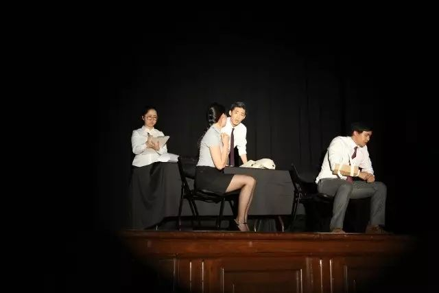

— 乌龙山伯爵 —
乌龙山伯爵
30岁生日这天
谢蟹收到了一份大礼：
二大爷的骨灰盒
正纠结坟价的谢蟹
惊喜地发现
饿死的二大爷
还给他留了另一份大礼
然而正是这份大礼
让谢蟹经历了重重惊险
被迫踏上了复仇之路…

《乌龙山伯爵》在CKC上演的那一天，我坐在观众席前排左侧的一个角落为演员们照相。 经过一个学期高频率的反复训练，整个剧组的发挥达到了炉火纯青的地步。
演员逼真的演技，自信的台风，专业的走位和舞台呈现，深深地打动了在场的每一位观众。
可是我知道，同样令人感动的还有负责道具、灯光、音乐、后勤的同学。灭灯，观众们看不到道具奔忙的身影；
灯亮，高楼大厦平地而起，那是道具的付出。 剧情跌宕起伏，各色灯光，枪响，耳光，声光和演员的表演无缝地完美配合，那是音效灯光的付出。
后台全程连接着的电话指挥全局，前期的道具制作，演员排练时间表的安排，一次次的反复指导和训练，那是导演、舞监和制作人的付出。
我坐在台下如痴如醉地看着，渐渐的，渐渐的，演员的嬉笑怒骂，灯光的明暗交替，黑暗中道具同学细碎的脚步声，此起彼伏的背景音乐，
后台导演紧锣密鼓地指挥仿佛成了一首和谐的交响乐。它深深地打动了我，也打动了在场的每一个人。这，当之无愧的，是又一场令人难忘的，Tiny的大戏。
排戏过程最大的困难可能就是排时间表了。我们花了很多心思做时间表，保证演员没有戏不会在房间尬陪。一开始声音有些闷，放不开的演员，我们不断地鼓励他们，也进步了很多。
大家都很负责敬业，为了大戏经常牺牲自己的时间。有的同学为了角色会不断进行思考，感觉不去娱乐圈可惜了。演出音效对这么准，演员发挥超常，我们很高兴。
——导演: 王昊天 顾兆悦
制片: James
舞监: Helen
制片: James
舞监: Helen
毕业了，演好谢蟹，Tiny谢谢
——吴承骏
认识大家很开心，演技极致是变性
——王家明美
邱田这个角色的难度，就在于剧本对他进行了大量留白式的处理。很多时候他没有台词，可是他的神情动作还得在，人物形象还得在。正所谓：在舞台上，灯在人在，灯灭人去后台。
——封越
颠覆性的表演是有难度的，颠覆观众的刻板印象，更颠覆演员自我。Eden警官这个形象，比我坏一点，可是又有几分可爱，演的时候比较容易代入，是一个好的起点
——Eden
装疯卖傻，嬉笑怒骂，今天在舞台上我们演出了几个坏蛋的心酸与可爱
——王博轩，薛博凡，周逸之，白翔
为艺术而献身，是一个党员的基本素养，脱！
——王英豪
说谁配角呢？再说一遍你试试
——王博轩 詹舒雅 丁瑞琳
沉点儿累点儿可以，道具不能磕着
——道具组 徐梦瑶 张晓蔚 Rick Viki
第一次演戏，多谢导演们关照，
——薛博凡
音效逼真啥都有，全靠我打碟那双手
——音效 Danica

这么亮堂的舞台，就是我们照的
——灯光 雷越淇 盛开 郭晋
建筑狗演大戏，酸爽
——Nina
拍摄 Henry L
文案／编辑 Henry L
文案／编辑 Henry L
Gallery

想参加大戏的制作吗?
下一个演员/导演或许就是你！
Join Us